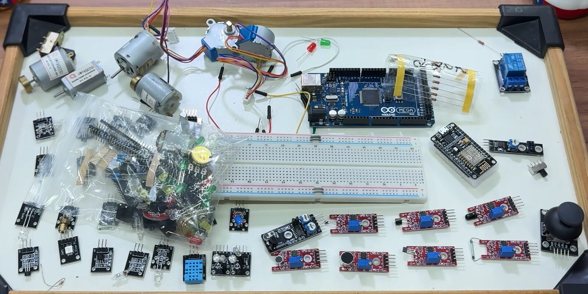
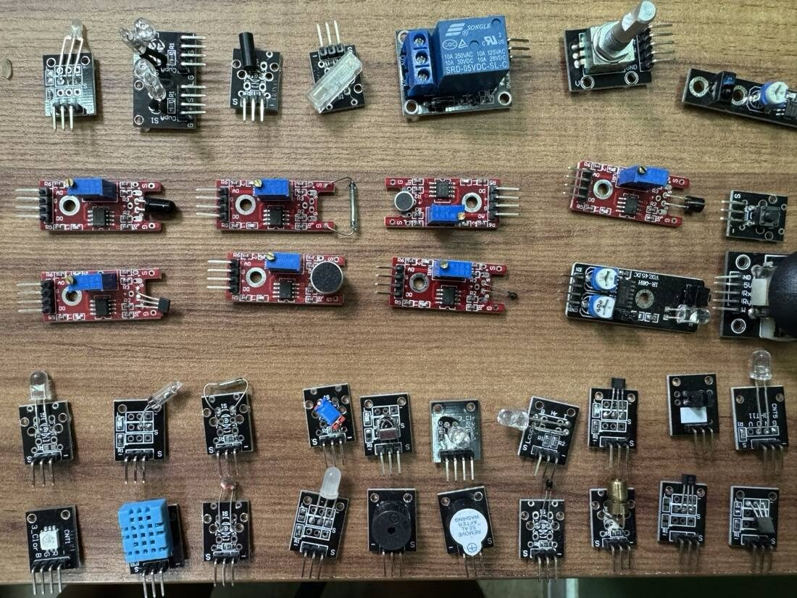
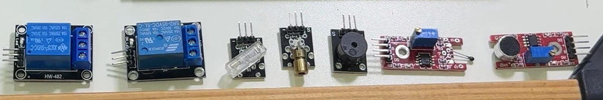
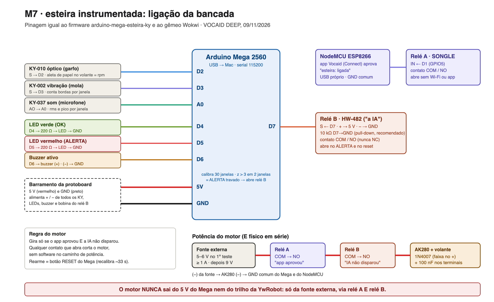
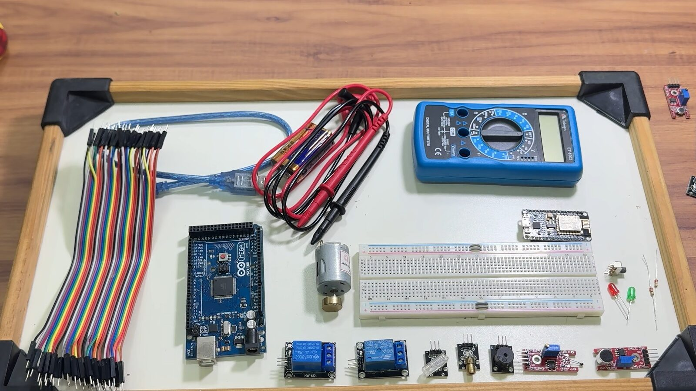
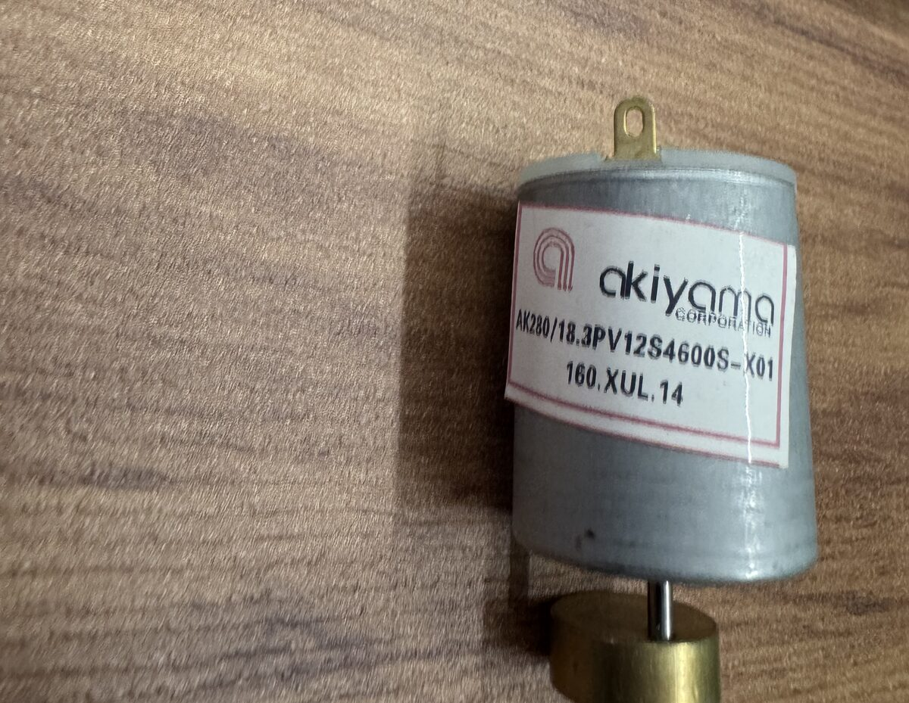
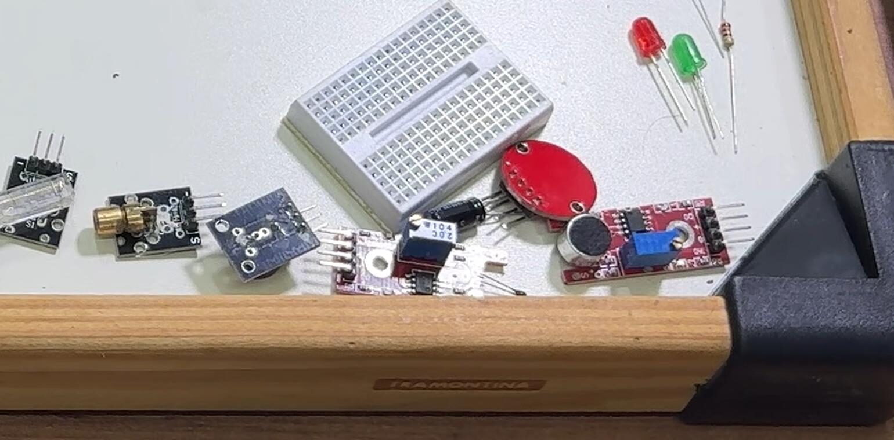
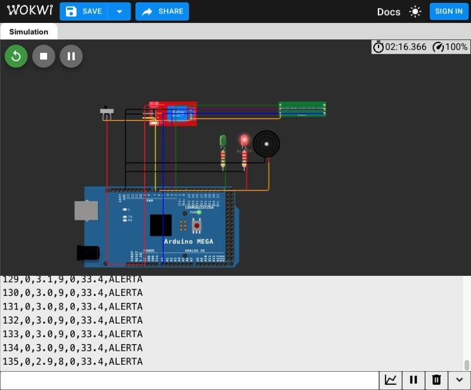

<meta charset="utf-8">
<title>Guia Physical AI — Masterclass 12/11</title>
<meta name="claude:viewport-fit-sides" content="cover">
<link rel="stylesheet" href="https://fonts.googleapis.com/css2?family=Fraunces:opsz,wght@9..144,600&family=IBM+Plex+Sans:wght@400;600&family=IBM+Plex+Mono:wght@400;600&display=swap">
<style>
/* Layout: coluna única de leitura, blocos numerados na ordem da aula, tabelas roláveis. */
:root{
  --bg:#f7f5fb; --fg:#1a1326; --muted:#5f566e; --line:#ddd6ea; --card:#ffffff;
  --accent:#6d28d9; --warn-bg:#fff3d6; --warn-fg:#5c4200; --code-bg:#efeaf7;
  --f-display:"Fraunces",Georgia,serif; --f-body:"IBM Plex Sans",system-ui,sans-serif; --f-mono:"IBM Plex Mono",ui-monospace,monospace;
}
@media (prefers-color-scheme: dark){:root:not([data-theme="light"]){
  --bg:#0b0614; --fg:#f5f3ff; --muted:#b9b0cf; --line:#2c2142; --card:#1c1130;
  --accent:#c084fc; --warn-bg:#3a2e0c; --warn-fg:#f3dc9a; --code-bg:#22183a; color-scheme:dark}}
:root[data-theme="dark"]{
  --bg:#0b0614; --fg:#f5f3ff; --muted:#b9b0cf; --line:#2c2142; --card:#1c1130;
  --accent:#c084fc; --warn-bg:#3a2e0c; --warn-fg:#f3dc9a; --code-bg:#22183a; color-scheme:dark}
body{background:var(--bg);color:var(--fg);font-family:var(--f-body);font-size:16px;line-height:1.6;
  padding-block:24px 64px;padding-left:max(16px,env(safe-area-inset-left,0px));padding-right:max(16px,env(safe-area-inset-right,0px))}
main{max-width:46rem;margin:0 auto;display:flex;flex-direction:column;gap:32px;min-width:0}
h1,h2,h3{font-family:var(--f-display);line-height:1.2;text-wrap:balance;margin:0}
h1{font-size:2rem} h2{font-size:1.4rem;border-top:1px solid var(--line);padding-top:24px} h3{font-size:1.05rem;font-family:var(--f-body);font-weight:600}
p,ul,ol{margin:0} ul,ol{padding-left:1.3rem;display:flex;flex-direction:column;gap:6px}
section{display:flex;flex-direction:column;gap:12px;min-width:0}
a{color:var(--accent);overflow-wrap:anywhere} a:focus-visible{outline:2px solid var(--accent);outline-offset:2px}
code,pre{font-family:var(--f-mono);font-size:.88rem;background:var(--code-bg);border-radius:4px}
code{padding:1px 5px} pre{padding:12px;overflow-x:auto;margin:0}
.lead{color:var(--muted)} .tag{font-family:var(--f-mono);font-size:.78rem;letter-spacing:.06em;text-transform:uppercase;color:var(--muted)}
.box{background:var(--card);border:1px solid var(--line);border-radius:6px;padding:16px;display:flex;flex-direction:column;gap:10px;min-width:0}
.warn{background:var(--warn-bg);color:var(--warn-fg);border-color:transparent}
.wrap{overflow-x:auto} table{border-collapse:collapse;min-width:34rem;width:100%;font-size:.92rem}
th,td{text-align:left;padding:8px 10px;border-bottom:1px solid var(--line);vertical-align:top} th{font-weight:600;background:var(--code-bg)}
.chk{list-style:none;padding:0} .chk label{display:flex;gap:10px;align-items:flex-start}
.chk input{margin-top:5px;accent-color:var(--accent)}
.pend{font-family:var(--f-mono);font-size:.82rem;font-weight:600}
.nw{white-space:nowrap}
figure{margin:0;display:flex;flex-direction:column;gap:6px;min-width:0}
figure img{width:100%;height:auto;border-radius:6px;border:1px solid var(--line)}
figcaption{color:var(--muted);font-size:.85rem}
.fotos{display:grid;grid-template-columns:repeat(auto-fit,minmax(13rem,1fr));gap:12px}
</style>
<main>
<header style="display:flex;flex-direction:column;gap:8px">
  <span class="tag">VOCAID DEEP · Masterclass 12/11/2026</span>
  <h1>Guia Physical AI</h1>
  <p class="lead">Tudo o que apareceu na aula, na mesma ordem, para refazer em casa sem instalar nada e sem hardware: Wokwi anônimo e Colab, no navegador.</p>
  <p>Programa: <a href="https://luma.com/iy45kh9o">inscrição no Luma</a> · Edital nº 001/2026</p>
</header>

<section class="box warn" id="pendente-p4">
  <h2 style="border:0;padding:0;font-size:1.1rem">PENDENTE-P4 · links a preencher antes da aula</h2>
  <p>Projetos anônimos do Wokwi não salvam. O operador salva cada um numa conta Wokwi e cola o link abaixo; enquanto isso, use o passo "projeto novo" de cada bloco.</p>
  <ul class="chk">
    <li><label><input type="checkbox"> <span><span class="pend">PENDENTE-P4</span> Wokwi ESP32 puro-C (motor 81, 240 ciclos): <em>link</em></span></label></li>
    <li><label><input type="checkbox"> <span><span class="pend">PENDENTE-P4</span> Wokwi Uno, portão de rejeito (crachá = botão): <em>link</em></span></label></li>
    <li><label><input type="checkbox"> <span><span class="pend">PENDENTE-P4</span> Wokwi Mega, rede do motor: <em>link</em></span></label></li>
    <li><label><input type="checkbox"> <span><span class="pend">PENDENTE-P4</span> Wokwi Mega, gêmeo da esteira (chip customizado): <em>link</em></span></label></li>
    <li><label><input type="checkbox"> <span><span class="pend">PENDENTE-P4</span> Colab <code>demo-colab-15-11.ipynb</code>: <em>link</em></span></label></li>
    <li><label><input type="checkbox"> <span><span class="pend">PENDENTE-P4</span> Colab <code>demo-cv-fissuras.ipynb</code>: <em>link</em></span></label></li>
    <li><label><input type="checkbox"> <span><span class="pend">PENDENTE-P4</span> Vídeo da UOL (série O Impensável) e vídeo do Connect MCP: <em>links</em></span></label></li>
  </ul>
</section>

<section id="kit">
  <h2>O kit: bancada, compras e teste dos sensores</h2>
  <p>A bancada da aula tem Arduino Mega, NodeMCU (ESP8266), dois relés, protoboard, motor AK280 com volante e o kit de sensores KY. O que não está nela aparece só no Wokwi ou no Colab.</p>
  <figure><figcaption>As peças da bancada antes da montagem.</figcaption></figure>
  <div class="wrap"><table>
    <tr><th>Peça</th><th>Onde</th><th>No Wokwi</th><th>Papel</th></tr>
    <tr><td>Arduino Mega</td><td>bancada</td><td><code>wokwi-arduino-mega</code></td><td>esteira KY e rede do motor (27% da flash)</td></tr>
    <tr><td>KY-010 (óptico), KY-037 (som), KY-002 (vibração)</td><td>bancada</td><td>chip customizado <code>chip-esteira</code></td><td>rpm, som e vibração</td></tr>
    <tr><td>Motor AK280 + volante</td><td>bancada</td><td>dentro do chip</td><td>o processo vigiado</td></tr>
    <tr><td>Relé B (KY-019)</td><td>bancada</td><td><code>wokwi-relay-module</code></td><td>o Mega corta o motor</td></tr>
    <tr><td>NodeMCU + relé A</td><td>bancada</td><td>uma chave</td><td>o app libera o motor</td></tr>
    <tr><td>Motor de passo 28BYJ-48</td><td>bancada</td><td>—</td><td>rpm medido pela câmera</td></tr>
    <tr><td>LEDs + 220 Ω, buzzer</td><td>bancada</td><td><code>wokwi-led</code>, <code>wokwi-buzzer</code></td><td>OK / ALERTA visível</td></tr>
    <tr><td>ESP32 DevKit</td><td>só simulador</td><td><code>board-esp32-devkit-v1</code></td><td>motor 81, 240 ciclos</td></tr>
    <tr><td>Arduino Uno</td><td>só simulador</td><td><code>wokwi-arduino-uno</code></td><td>portão; o motor não cabe (213%)</td></tr>
    <tr><td>Crachá</td><td>só simulador</td><td>botão em A2</td><td>arma o portão por 10 s</td></tr>
    <tr><td>HC-SR04, servo, botão</td><td>só simulador</td><td><code>wokwi-hc-sr04</code>, <code>wokwi-servo</code>, <code>wokwi-pushbutton</code></td><td>mede e rejeita a peça</td></tr>
  </table></div>
  <p class="lead">Ids Wokwi conferidos em docs.wokwi.com/parts.</p>

  <h3>Para testar em casa: lista de compras</h3>
  <p>Base mais a opção A (kit pronto) ou B (só as peças da aula). O teste não usa motor: os sensores reagem a gestos e tudo roda pelo USB. Antes de comprar, experimente o <a href="https://wokwi.com/projects/480213362190861313">gêmeo da esteira no Wokwi</a>.</p>
  <div class="wrap"><table>
    <tr><th>Item</th><th>Qtd</th><th class="nw">Faixa de preço</th></tr>
    <tr><td colspan="3"><strong>Base</strong></td></tr>
    <tr><td>Arduino Mega 2560 compatível (CH340) + cabo USB</td><td>1</td><td class="nw">R$ 80–150</td></tr>
    <tr><td>Protoboard de 830 pontos</td><td>1</td><td class="nw">R$ 15–30</td></tr>
    <tr><td>Jumpers macho-fêmea e macho-macho</td><td>40 + 40</td><td class="nw">R$ 10–20</td></tr>
    <tr><td>LED verde, LED vermelho e 2 resistores de 220 Ω</td><td>2 + 2</td><td class="nw">R$ 2–5</td></tr>
    <tr><td colspan="3"><strong>Opção A (recomendada)</strong></td></tr>
    <tr><td>Kit 37 sensores (KY-001 a KY-040): já traz KY-010, KY-037, KY-002, relé KY-019 e buzzers KY-006/KY-012</td><td>1</td><td class="nw">R$ 70–150</td></tr>
    <tr><td colspan="3"><strong>Opção B</strong></td></tr>
    <tr><td>KY-010 (ou KY-033), KY-037, KY-002</td><td>1 de cada</td><td class="nw">R$ 16–37</td></tr>
    <tr><td>Relé 1 canal 5 V (KY-019) e buzzer (KY-006 ou KY-012)</td><td>1 de cada</td><td class="nw">R$ 11–23</td></tr>
  </table></div>
  <p><strong>Total:</strong> opção A, R$ 180–350; opção B, R$ 135–265. <span class="lead">Referência de novembro de 2026, sem loja. Use o Mega: o diagnóstico usa pinos que o Uno não tem.</span></p>
  <div class="fotos">
    <figure><figcaption>Opção A: o kit de 37 sensores KY.</figcaption></figure>
    <figure><figcaption>Os módulos da bancada de perto: os dois relés, sensores KY e o buzzer.</figcaption></figure>
  </div>

  <h3>Ligações (Arduino Mega)</h3>
  <div class="wrap"><table>
    <tr><th>Peça</th><th>Pino</th><th>Nota</th></tr>
    <tr><td>KY-010 (ou KY-033), S</td><td>D2</td><td>1 aleta = 1 pulso por volta</td></tr>
    <tr><td>KY-002, S</td><td>D3</td><td>conta todas as bordas</td></tr>
    <tr><td>KY-037, AO</td><td>A0</td><td>amostrado a cada ~1 ms; DO sem fio</td></tr>
    <tr><td>Relé B KY-019, S</td><td>D7</td><td>ativo em nível alto (<code>RELE_ATIVO_BAIXO = false</code>), 10 kΩ de D7 ao GND; contatos COM e NO, nunca NC</td></tr>
    <tr><td>LED verde / vermelho</td><td>D4 / D5</td><td>220 Ω em série</td></tr>
    <tr><td>Buzzer</td><td>D6</td><td>o <code>-</code> no GND</td></tr>
  </table></div>
  <p>Cada módulo KY: <code>-</code> no GND, o pino do meio no 5 V, <code>S</code> ou <code>AO</code> no pino da tabela. Todos os GND são comuns.</p>
  <figure><figcaption>Diagrama da bancada (M7). O motor só entra na seção Esteira instrumentada.</figcaption></figure>

  <h3>Teste dos sensores em 5 passos</h3>
  <ol>
    <li>Na <a href="https://www.arduino.cc/en/software">Arduino IDE</a>, placa <strong>Arduino Mega or Mega 2560</strong>: cole o diagnóstico (abaixo) e grave. Placas com CH340 podem pedir driver.</li>
    <li>Monitor Serial em <strong>115200</strong>: 20 linhas por segundo começando com <code>L,</code>.</li>
    <li>Gestos: mão na fenda do KY-010 (a 5ª coluna sobe), batida na protoboard ao lado do KY-002 (a 6ª), palmas perto do KY-037 (a 7ª e a 8ª se afastam; se nada mexer, gire o trimpot).</li>
    <li><code>T</code> + Enter: o relé clica 1 s, os LEDs alternam e o buzzer dá 3 bipes. <code>P</code>: 3 tons de 2 kHz, que só o buzzer passivo toca.</li>
    <li>Fio no pino errado: a última coluna mostra o pino que mexeu em vez de <code>-</code>.</li>
  </ol>
  <pre>L,t_ms,d2,d3,bordas_d2,bordas_d3,a0_min,a0_max,a0_med,rele_d7,led_d4,led_d5,buzzer_d6,pinos_que_mexeram</pre>
  <div class="box warn"><p><strong>Segurança:</strong> este teste não tem motor nem tomada, e nada fica ligado nos contatos do relé. Motor só com os cuidados da seção "Esteira instrumentada".</p></div>

  <h3>Fotos da montagem</h3>
  <div class="fotos">
    <figure><figcaption>A bancada montada: Mega, relés, protoboard e multímetro.</figcaption></figure>
    <figure><figcaption>O AK280 com o volante de latão: a aleta passa pela fenda do KY-010.</figcaption></figure>
    <figure><figcaption>Sensores KY e LEDs separados para a montagem.</figcaption></figure>
    <figure><figcaption>O gêmeo no Wokwi: o mesmo firmware, sem hardware.</figcaption></figure>
  </div>

  <details>
    <summary>Programa de diagnóstico <code>diag_ao_vivo.ino</code> (75 linhas)</summary>
    <pre>// VOCAID DEEP - M7: firmware de DIAGNOSTICO ao vivo (nao e o firmware da aula).
// Manda 20 linhas/s pela serial (115200) para o painel em sinais/painel-ao-vivo/:
//   L,t_ms,d2,d3,bordas_d2,bordas_d3,a0_min,a0_max,a0_med,rele_d7,led_d4,led_d5,buzzer_d6,pinos_que_mexeram
// Entradas: D2 (rpm: KY-010/KY-033) e D3 (vibracao) com INPUT_PULLUP e interrupcao CHANGE, como no firmware do M7;
//           A0 (KY-037 AO) amostrado continuamente entre as linhas.
// Saidas:   rele B (D7) ABERTO o tempo todo, exceto no teste. LEDs (D4, D5, D12, D13) acendem 200 ms a cada atividade.
// Comando:  &#x27;T&#x27; pela serial = teste das saidas por ~3 s: rele B fecha 1 s, LEDs verde/vermelho alternam, buzzer da 3 bipes.
//           SEM MOTOR LIGADO no contato do rele durante o teste.
//           &#x27;P&#x27; = 3 tons de 2 kHz no D6: separa buzzer PASSIVO (so soa com tom) de ATIVO (soa com nivel ALTO).
// Detector de pinos: vigia os pinos digitais livres (fora 0/1 da serial e as saidas 4,5,6,7,12,13) e conta mudancas
// por linha; a linha ganha um 14o campo com os pinos que mexeram (&quot;3.22&quot;) ou &quot;-&quot;. Acha fio no pino errado.
const byte DETECT[] = {8, 9, 10, 11, 14, 15, 16, 17, 18, 19, 20, 21, 22, 23, 24, 25, 26, 27, 28, 29, 30, 31, 32, 33,
                       34, 35, 36, 37, 38, 39, 40, 41, 42, 43, 44, 45, 46, 47, 48, 49, 50, 51, 52, 53};
const byte ND = sizeof(DETECT);
byte antDet[ND]; byte mexeu[ND];
volatile unsigned long b2 = 0, b3 = 0;
void e2() { b2++; }
void e3() { b3++; }
const int LEDS[] = {4, 5, 12, 13};
const int RELE = 7, BUZZER = 6;
unsigned long tTeste = 0;   // 0 = sem teste; senao, millis() do inicio
void setup() {
  pinMode(RELE, OUTPUT); digitalWrite(RELE, LOW);
  pinMode(BUZZER, OUTPUT); digitalWrite(BUZZER, LOW);
  for (int i = 0; i &lt; 4; i++) { pinMode(LEDS[i], OUTPUT); digitalWrite(LEDS[i], LOW); }
  pinMode(2, INPUT_PULLUP); pinMode(3, INPUT_PULLUP);
  attachInterrupt(digitalPinToInterrupt(2), e2, CHANGE);
  attachInterrupt(digitalPinToInterrupt(3), e3, CHANGE);
  for (byte i = 0; i &lt; ND; i++) { pinMode(DETECT[i], INPUT_PULLUP); antDet[i] = digitalRead(DETECT[i]); mexeu[i] = 0; }
  Serial.begin(115200);
  Serial.println(F(&quot;# DIAG AO VIVO: L,t_ms,d2,d3,bordas_d2,bordas_d3,a0_min,a0_max,a0_med,rele_d7,led_d4,led_d5,buzzer_d6&quot;));
}
// Sequencia do teste (ms desde o inicio): rele 0-1000; verde/vermelho alternam a cada 250 ms ate 2000; bipes 2000-3000.
void saidasTeste(unsigned long dt) {
  digitalWrite(RELE, dt &lt; 1000 ? HIGH : LOW);
  bool verde = dt &lt; 2000 &amp;&amp; ((dt / 250) % 2 == 0);
  bool verm = dt &lt; 2000 &amp;&amp; !verde;
  digitalWrite(4, verde); digitalWrite(12, verde);
  digitalWrite(5, verm); digitalWrite(13, verm);
  digitalWrite(BUZZER, (dt &gt;= 2000 &amp;&amp; dt &lt; 3000 &amp;&amp; ((dt - 2000) % 330) &lt; 150) ? HIGH : LOW);
}
void loop() {
  static unsigned long t0 = millis(), ultAtiv = 0;
  static int mn = 1023, mx = 0; static long soma = 0; static int n = 0;
  while (Serial.available()) {
    char c = Serial.read();
    if (c == &#x27;T&#x27;) { tTeste = millis(); if (!tTeste) tTeste = 1; Serial.println(F(&quot;# teste das saidas&quot;)); }
    if (c == &#x27;P&#x27; &amp;&amp; !tTeste) { Serial.println(F(&quot;# tom de 2 kHz no D6 (buzzer passivo)&quot;)); for (int i = 0; i &lt; 3; i++) { tone(BUZZER, 2000, 200); delay(330); } noTone(BUZZER); digitalWrite(BUZZER, LOW); }
  }
  int v = analogRead(A0);
  if (v &lt; mn) mn = v; if (v &gt; mx) mx = v; soma += v; n++;
  for (byte i = 0; i &lt; ND; i++) { byte d = digitalRead(DETECT[i]); if (d != antDet[i]) { antDet[i] = d; mexeu[i] = 1; } }
  if (tTeste) {
    unsigned long dt = millis() - tTeste;
    if (dt &lt; 3000) saidasTeste(dt);
    else { tTeste = 0; digitalWrite(RELE, LOW); digitalWrite(BUZZER, LOW); }
  }
  if (millis() - t0 &gt;= 50) {
    t0 += 50;
    noInterrupts(); unsigned long c2 = b2, c3 = b3; b2 = 0; b3 = 0; interrupts();
    if (c2 || c3 || mx - mn &gt; 60) ultAtiv = millis();
    if (!tTeste) { bool on = millis() - ultAtiv &lt; 200; for (int i = 0; i &lt; 4; i++) digitalWrite(LEDS[i], on ? HIGH : LOW); }
    Serial.print(F(&quot;L,&quot;)); Serial.print(millis()); Serial.print(&#x27;,&#x27;);
    Serial.print(digitalRead(2)); Serial.print(&#x27;,&#x27;); Serial.print(digitalRead(3)); Serial.print(&#x27;,&#x27;);
    Serial.print(c2); Serial.print(&#x27;,&#x27;); Serial.print(c3); Serial.print(&#x27;,&#x27;);
    Serial.print(mn); Serial.print(&#x27;,&#x27;); Serial.print(mx); Serial.print(&#x27;,&#x27;); Serial.print(n ? soma / n : 0); Serial.print(&#x27;,&#x27;);
    Serial.print(digitalRead(RELE)); Serial.print(&#x27;,&#x27;); Serial.print(digitalRead(4)); Serial.print(&#x27;,&#x27;);
    Serial.print(digitalRead(5)); Serial.print(&#x27;,&#x27;); Serial.print(digitalRead(BUZZER)); Serial.print(&#x27;,&#x27;);
    bool algum = false;
    for (byte i = 0; i &lt; ND; i++) if (mexeu[i]) { if (algum) Serial.print(&#x27;.&#x27;); Serial.print(DETECT[i]); algum = true; mexeu[i] = 0; }
    if (!algum) Serial.print(&#x27;-&#x27;);
    Serial.println();
    mn = 1023; mx = 0; soma = 0; n = 0;
  }
}</pre>
  </details>
</section>

<section id="regras">
  <h2>Duas regras que valem para tudo</h2>
  <div class="box">
    <h3>Medição honesta</h3>
    <p>No emulador, acurácia e memória são confiáveis (bytes, lógica, saída int8 idêntica). A latência que o Wokwi mostra é tempo simulado: use só como comparação relativa, nunca como número da placa. Latência de verdade se mede na placa real.</p>
    <h3>Reivindicação testável, em uma frase</h3>
    <pre>No [objeto/dado congelado, versão], o [modelo/código] dá [número medido, onde foi medido]; para refutar, rode [passo] e confira [o que deveria dar].</pre>
    <p>Exemplo da aula: no motor 81 do C-MAPSS FD001 (dado congelado), a rede int8 de 44 608 bytes dá o primeiro alerta no ciclo 207; a verdade do dado diz 210.</p>
  </div>
</section>

<section id="b-colab">
  <h2>Receita no computador (Colab)</h2>
  <ol>
    <li>Abra o <code>demo-colab-15-11.ipynb</code> no Colab (link no PENDENTE-P4; sem link, em colab.research.google.com use <em>Upload</em> do arquivo).</li>
    <li>Execute as células em ordem: setup, dado C-MAPSS FD001 (100 motores da NASA), treino curto de uma MLP de uns 45 mil pesos, quantização INT8, tabela tamanho × acurácia, exportação do header C.</li>
    <li>Guarde a saída int8 de cada ciclo do motor 81: é o gabarito para o simulador e para a placa.</li>
  </ol>
</section>

<section id="b-wokwi">
  <h2>Código no simulador: ESP32, 240 ciclos</h2>
  <ol>
    <li>Abra <a href="https://wokwi.com/projects/new/esp32">wokwi.com/projects/new/esp32</a> (sem conta).</li>
    <li>Cole <code>sketch.ino</code>. Crie dois arquivos novos pelo menu da aba: <code>modelo_int8_c.h</code> e <code>motor81_dados.h</code>. Substitua o <code>diagram.json</code> (ESP32 DevKit v1, LED vermelho em D4, LED verde em D5, resistores de 220 Ω).</li>
    <li>Deixe <code>MS_POR_CICLO=5</code> para a reprodução caber na aula. Aperte play; o servidor gratuito compila em cerca de 30 s.</li>
    <li>Esperado na serial: 240/240 ciclos idênticos ao notebook, primeiro alerta no ciclo 207 (verdade: 210), <code>RESULTADO: PASS</code>.</li>
  </ol>
</section>

<section id="b-portao">
  <h2>Portão de rejeito com crachá (Uno, só no Wokwi)</h2>
  <ol>
    <li>Projeto novo <a href="https://wokwi.com/projects/new/arduino-uno">Arduino Uno</a>. Cole <code>wokwi-uno-portao-rejeito.ino</code> como <code>sketch.ino</code>, mais <code>cracha.h</code>, <code>cracha_botao.h</code> e <code>libraries.txt</code> (uma linha: <code>Servo</code>); cole o <code>diagram.json</code>.</li>
    <li>Serial esperado na partida: <code>AUTO-TESTE: 8/8 -> PASS</code>.</li>
    <li>Aperte "próxima peça" sem crachá: <code>BLOQUEADO: sem aprovacao</code>. O servo não mexe.</li>
    <li>Aperte o botão-crachá: <code>APROVADO por SIM-BOTAO</code>, armado por 10 s, LED azul aceso.</li>
    <li>Com o HC-SR04 a 20 cm (altura 9,8) e "próxima peça": <code>ok</code>. A 18 cm (altura 11,8): <code>rejeito</code>, servo a 90°, LED vermelho.</li>
  </ol>
  <p class="lead">Este portão não está na bancada. O botão é substituto: um leitor RFID de verdade (RC522) conferiria o UID de 4 bytes. O contrato (aprovar, armar por 10 s, só então mover) é o mesmo. O modelo decide; quem autoriza o mundo físico é um humano com um crachá.</p>
</section>

<section id="b-mega-uno">
  <h2>Mega cabe, Uno não cabe</h2>
  <ol>
    <li>No Wokwi, use o <code>arduino-mega-cmapss.ino</code> com <code>modelo_int8_c.h</code> e <code>motor81_dados.h</code>, primeiro numa placa Mega, depois troque a placa para Uno.</li>
    <li>Mega: 69 458 bytes de flash (27% de 253 952), 661 bytes de RAM global (8%). Os pesos ficam em PROGMEM.</li>
    <li>Uno: 68 738 bytes (213% de 32 256). O build falha com <code>text section exceeds available space in board</code>. Ou o modelo encolhe, ou a placa cresce.</li>
  </ol>
  <p class="lead">Números do <code>arduino-cli</code> 1.5.1, core <code>arduino:avr</code> 1.8.8, 08/11/2026. A conferência ciclo a ciclo na placa Mega real é do ensaio de 11/11.</p>
</section>

<section id="b-visao">
  <h2>Visão e detecção</h2>
  <ol>
    <li><strong>Fissuras:</strong> abra o <code>demo-cv-fissuras.ipynb</code> no Colab. CNN de 5 921 parâmetros; 97,5% de acurácia em float32 e em INT8 nas 400 imagens de teste congeladas (os mesmos 10 erros); modelo int8 de 11,8 KB; medido na CPU de um Mac. No Colab gratuito a acurácia varia uns 2 pontos; o número citado é o do script, semente 42.</li>
    <li><strong>Detecção de objetos:</strong> OpenCV DNN com MobileNet-SSD em <code>cv-deteccao/rodar_deteccao.py</code>. A faixa "ALERTA DE PROXIMIDADE" é heurística em cima da detecção, não um modelo de colisão.</li>
  </ol>
</section>

<section id="m7">
  <h2>Esteira instrumentada (Mega + kit KY)</h2>
  <p>Os três sensores e o motor geram o <strong>sinal de estado</strong> da esteira: rpm, som e vibração, uma linha por segundo. Esse sinal é o que a aula mede, o que o Mega vigia e o que a avaliação no laptop usa. Método: <strong>estatística calibrada</strong> (z-score por canal), não rede neural. O upgrade seria um MLP int8 como no módulo de impacto; a serial diz isso na partida. Quem decide é o Mega (estatística), e o relé corta o motor. A IA que tipa os eventos roda no laptop (seção &quot;Sinais e anomalias&quot;) e não aciona nada.</p>
  <p>O motor do processo é um <strong>Akiyama AK280</strong> (12 V DC) com <strong>volante de latão</strong> no eixo. Uma aleta de papel no aro do volante passa pela fenda do KY-010.</p>
  <p><strong>Ligações:</strong> as mesmas da seção <a href="#kit">O kit</a> (tabela e diagrama).</p>
  <h3>Aleta</h3>
  <p>Uma tira de papel de <strong>5 a 15 mm ao longo do aro</strong>, cobrindo <strong>menos da metade do aro</strong>, colada no volante, passando pela fenda do KY-010 sem raspar.</p>
  <h3>Alimentação: dois relés em série</h3>
  <pre>adaptador externo 9–12 V (+) → relé A (NodeMCU, o app)
                              → relé B (KY-019 no Mega, a estatística)
                              → AK280 (+)
adaptador (−) → AK280 (−) → GND comum</pre>
  <ul>
    <li>Adaptador externo de 9 a 12 V, <strong>≥ 1 A</strong>, de preferência com fusível. Nunca o 5 V do Mega nem o trilho da protoboard: a corrente de partida derruba a placa.</li>
    <li>Nos terminais do motor: <strong>diodo 1N4007</strong> em antiparalelo (faixa no +) e <strong>capacitor de 100 nF</strong>.</li>
    <li>O motor só gira se o app aprovou (relé A) <strong>e</strong> o Mega (estatística) não disparou (relé B).</li>
  </ul>
  <div class="box warn">
    <h3>Segurança</h3>
    <p>Óculos de proteção. Volante preso e coberto (copo ou caixa transparente). Sem mangas soltas nem cabelo solto. Primeiro teste na menor tensão, depois 9 V, no máximo 12 V.</p>
    <p>Antes de ligar o motor, com ele <strong>desconectado</strong> e o multímetro em COM–NO: relé A aberto sem Wi-Fi e fechado com <code>ligada</code>; relé B aberto no boot e no AUTO-TESTE, fechado depois do cabeçalho CSV, aberto de novo na <code>SUSPEITA</code> ou no <code>ALERTA</code>. Invertido: troque <code>RELE_ATIVO_BAIXO</code>.</p>
  </div>
  <h3>Como funciona</h3>
  <ol>
    <li>3 janelas de aquecimento (<code>AQUECENDO</code>), descartadas.</li>
    <li>30 janelas de 1 s (<code>CALIBRANDO</code>) aprendem média e desvio de rpm, som e vibração, com piso por canal. Comece sem falha. Se o motor estava parado, a serial diz <code># SUSPEITA: motor cortado</code> e o relé B abre.</li>
    <li>Em cada janela: <code>z = (x − média) / desvio</code>, <code>escore = max|z|</code>.</li>
    <li>ALERTA só com 2 janelas seguidas com <code>escore &gt; 3,0</code>. O relé B corta o motor e fica travado; só o reset rearma.</li>
  </ol>
  <h3>Ordem da demonstração</h3>
  <ol>
    <li>Commit com <code>esteira: ligada</code> no <code>meta</code> do artigo.</li>
    <li>Espere <code># rele A fechado</code> na serial do NodeMCU.</li>
    <li>Reset no Mega: AUTO-TESTE, cabeçalho CSV, o motor parte.</li>
    <li>Espere <code># calibrado:</code>.</li>
    <li>Falha por atrito: <code>ALERTA</code>.</li>
  </ol>
  <p>Parar pelo app (<code>desligada</code>), uma queda de Wi-Fi ou um 429 abrem o relé A; o Mega vê o rpm cair e trava em <code>ALERTA</code> duas janelas depois. Rearme: reset do Mega com o relé A fechado, mais uns 33 s de recalibração.</p>
  <h3>Injeção de falha</h3>
  <p>Depois do <code># calibrado:</code>, encoste de leve no aro do volante um <strong>cotonete seco ou uma borracha presa num cabo</strong> (nunca os dedos). O atrito derruba o rpm e muda o som e a vibração; na segunda janela seguida acima de 3 a serial imprime <code># ALERTA TRAVADO</code>. Tirar o cotonete não desfaz. Uma moeda ou massa colada antes da calibração não serve: a calibração a aprende como normal.</p>
  <h3>O gêmeo no Wokwi (sem hardware)</h3>
  <p>Pasta <code>wokwi-mega-esteira-ky/</code>. O <code>sketch.ino</code> é o mesmo firmware da bancada, byte a byte. O Wokwi não tem o KY-010 nem o motor, então um <strong>chip customizado</strong> faz o AK280 com a aleta, o KY-010, o KY-037 e o KY-002. O motor só gira com a chave do relé A fechada <strong>e</strong> o relé B fechado, o mesmo E da bancada.</p>
  <ol>
    <li>Projeto novo <a href="https://wokwi.com/projects/new/arduino-mega">Arduino Mega</a>. Cole <code>sketch.ino</code> e o <code>diagram.json</code>.</li>
    <li>Menu da aba → <em>New file…</em>: <code>esteira.chip.json</code> e <code>esteira.chip.c</code>, colados sem alteração.</li>
    <li>Confira a chave "relé A" fechada e aperte play.</li>
    <li>Esperado: <code>AUTO-TESTE: 17/17 -&gt; PASS</code>, 3 janelas <code>AQUECENDO</code>, 30 <code>CALIBRANDO</code>, <code># calibrado:</code> com rpm perto de 2000, depois <code>NORMAL</code>.</li>
    <li>Clique no chip e ponha <code>atrito</code> em 60: duas janelas acima de 3, <code># ALERTA TRAVADO</code>, o relé B abre e o rpm cai a 0.</li>
  </ol>
  <p class="lead">Medido no wokwi.com em 08/11/2026: calibração com rpm 2002, som 55,0 e vibração 5,7; alerta duas janelas depois do atrito 60 (<code>evidencias/2026-11-08-t15-wokwi-esteira.txt</code>). Os outros controles do chip (<code>microfone_tampado</code>, <code>aleta_solta</code>, <code>ruido_sala</code>) usam as mesmas letras de rótulo da seção "Sinais e anomalias". O simulador acerta a lógica e a estatística; o motor e o tempo de verdade, só a bancada.</p>
  <h3>Saída CSV (115200)</h3>
  <pre>janela,rpm,som_rms,som_pico,vib,score,estado</pre>
  <p class="lead">Linhas com <code>#</code> são narração. O AUTO-TESTE de 17 vetores passou (<code>AUTO-TESTE: 17/17 -&gt; PASS</code>) em teste de host com o sketch real; o sketch ocupa 11 054 B de flash no Mega (4%). Não é medida da placa.</p>
</section>

<section id="esteira-app">
  <h2>App → circuito: o relé A no NodeMCU</h2>
  <p>Pasta <code>esp8266-esteira-app/</code>. Um NodeMCU ESP8266 lê por HTTPS o campo <code>meta</code> de um artigo de pesquisa pelo Vocaid Connect e fecha o <strong>relé A</strong> só enquanto o <code>meta</code> disser <code>esteira: ligada</code>. O commit vem do app ou do Claude Code. Qualquer erro (Wi-Fi, TLS, HTTP, resposta velha) abre o relé.</p>
  <div class="wrap"><table>
    <tr><th>NodeMCU</th><th>Módulo do relé A</th></tr>
    <tr><td>D1 (GPIO5)</td><td>IN</td></tr>
    <tr><td>3V3 ou VIN, conforme o módulo</td><td>VCC</td></tr>
    <tr><td>GND</td><td>GND (comum com o Mega e o adaptador)</td></tr>
  </table></div>
  <p class="lead">Se o módulo não clicar com os 3,3 V do GPIO, use um NPN (2N2222 ou BC547, 1 kΩ na base, 10 kΩ de pull-down) e <code>RELE_ATIVO_BAIXO = false</code>.</p>
  <h3>Passos do operador</h3>
  <ol>
    <li>No app, crie uma chave <strong>só de leitura</strong> (<code>research:read</code>), dedicada ao dispositivo; revogue depois da aula.</li>
    <li>Pegue o id do workspace do artigo (<code>rs_open_workspace</code> no Connect MCP, ou pelo app).</li>
    <li>Copie <code>segredos.exemplo.h</code> para <code>segredos.h</code> e preencha Wi-Fi de 2,4 GHz, chave e workspace. Nunca commite esse arquivo.</li>
    <li>Grave e faça a checagem do relé com o motor desconectado. Partida esperada: <code>AUTO-TESTE: 43/43 -&gt; PASS</code>.</li>
    <li>Siga a ordem da demonstração da esteira: commit <code>esteira: ligada</code>, <code># rele A fechado</code>, reset do Mega, <code># calibrado:</code>, falha.</li>
  </ol>
  <p class="lead">O marcador é estrito: <code>esteira: ligada</code> ou <code>{"esteira":"ligada"}</code>; nada pode vir depois de <code>ligada</code> na linha, e <code>desligada</code> veta. Testado no host (43/43); ainda não rodou na placa.</p>
</section>

<section id="cv-motor">
  <h2>A câmera como terceiro sensor do motor</h2>
  <p>Pasta <code>cv-motor/</code>. A webcam mede o mesmo motor com o <strong>mesmo z-score</strong> do Mega: 3 janelas descartadas, 30 de calibração, ALERTA com 2 janelas seguidas acima de 3,0.</p>
  <pre>python3 -m venv .venv
.venv/bin/pip install "opencv-python&lt;5" numpy
.venv/bin/python -I medir_motor.py --auto-teste
.venv/bin/python -I medir_motor.py vibracao --roi 120,80,200,150
.venv/bin/python -I medir_motor.py rpm --roi 220,140,200,200 --rpm-max-esperado 20</pre>
  <ul>
    <li><strong>vibracao:</strong> diferença entre quadros dentro de um ROI na carcaça do motor (não no volante). Serve para o AK280.</li>
    <li><strong>rpm:</strong> um marcador colorido no eixo, só para motor lento (o 28BYJ-48 a ~15 rpm). <code>--rpm-max-esperado</code> é obrigatório.</li>
  </ul>
  <div class="box">
    <h3>A lição de Nyquist</h3>
    <p>A 30 fps, com um marcador, a câmera distingue até 900 rpm. Acima disso o número dobra de volta: <strong>1260 rpm é lido como 540</strong>, errado, plausível e sem alarme. Por isso você declara o máximo do motor, e o AK280 (2000 a 4600 rpm) usa só o modo <code>vibracao</code>.</p>
  </div>
</section>

<section id="sinais">
  <h2>Sinais e anomalias</h2>
  <p>Pasta <code>sinais/</code>. Um registrador grava o que o Mega manda, uma pessoa aperta teclas para rotular o que está acontecendo, e a avaliação compara duas pistas: <strong>o Mega (estatística)</strong>, que aprende o normal de cada sensor (média e desvio), alarma quando um sai do normal e corta o relé, e a <strong>IA no laptop</strong>, que aprende como os sensores se <em>relacionam</em> (regressão treinada no normal) + regras físicas + contexto, e só tipa o evento. Essa relação entre canais é o que pega a inconsistência que o Mega não distingue: ele alarma, mas não diz que é o sensor. <strong>Nenhuma das duas é rede neural;</strong> a rede neural INT8 (o upgrade) é a receita do C-MAPSS e do módulo de impacto (MPU6050).</p>
  <ul>
    <li><strong>anomalia:</strong> o processo mudou e os sensores concordam (atrito no aro).</li>
    <li><strong>inconsistência:</strong> os sensores discordam entre si ou da física (microfone tampado, palheta solta).</li>
    <li><strong>evento esperado:</strong> uma parada que nós mandamos, pelo app. A IA sinaliza, o contexto reclassifica: <strong>contexto vence modelo</strong>.</li>
  </ul>
  <div class="box warn">
    <h3>Regra de honestidade</h3>
    <p>Sessão <strong>simulada = teste de fumaça</strong>: mostra que a régua funciona do jeito que desenhamos, não que funciona num motor de verdade. Só a sessão gravada na bancada vale como resultado. O painel marca a simulada com um banner SIMULADO e, em modo aula (<code>?aula=1</code>), recusa abri-la.</p>
  </div>
  <h3>Comandos (na raiz do repositório)</h3>
  <p>Python 3.12 (testado).</p>
  <pre>python3 -m venv sinais/.venv
sinais/.venv/bin/pip install -r sinais/requirements.txt

# 1. gravar uma sessão simulada (sem hardware)
sinais/.venv/bin/python -I sinais/registrador.py --simular --cenario completo --seed 7

# 1b. ou ao vivo, com o Mega na porta serial (o ensaio de 11/11 vai para sessoes/ensaio-2026-11-11/)
sinais/.venv/bin/python -I sinais/registrador.py --serial &lt;porta&gt; --saida sinais/sessoes/ensaio-2026-11-11

# 2. avaliar: escreve detectores.jsonl e avaliacao.json na pasta
sinais/.venv/bin/python -I sinais/avaliar.py sinais/sessoes/&lt;sessao&gt;/

# 3. painel de replay (offline)
cd sinais &amp;&amp; ../sinais/.venv/bin/python -I -m http.server 8130 --bind 127.0.0.1
# abra http://127.0.0.1:8130/painel/index.html?sessao=../sessoes/&lt;sessao&gt;</pre>
  <p>Notebook (já executado, com a sessão simulada de exemplo): <code>sinais/notebook/metricas-anomalias.ipynb</code>. Ele explica cada métrica e a tabela por evento. Para reexecutar (na raiz do repositório):</p>
  <pre>sinais/.venv/bin/jupyter nbconvert --to notebook --execute --ExecutePreprocessor.timeout=300 --ExecutePreprocessor.kernel_name=python3 --inplace sinais/notebook/metricas-anomalias.ipynb</pre>
  <p class="lead">Para rodar o notebook na sessão real, passe a pasta da sessão ao gerador e reexecute. O padrão é <code>sessoes/exemplo-simulado</code>:</p>
  <pre>sinais/.venv/bin/python -I sinais/notebook/gerar_notebook.py sinais/sessoes/ensaio-2026-11-11/&lt;sessao&gt;
sinais/.venv/bin/jupyter nbconvert --to notebook --execute --ExecutePreprocessor.timeout=300 --ExecutePreprocessor.kernel_name=python3 --inplace sinais/notebook/metricas-anomalias.ipynb</pre>
  <p class="lead">Se a sessão não tiver uma classe (por exemplo <code>p</code> ou <code>r</code>), o notebook diz "esta sessão não tem …" em vez de falhar, e o texto próprio do simulador só aparece quando o manifesto diz <code>"simulado": true</code>.</p>
  <h3>Teclas de rótulo</h3>
  <div class="wrap"><table>
    <tr><th>Tecla</th><th>Significa</th><th>Tipo</th></tr>
    <tr><td><code>n</code></td><td>normal</td><td>referência</td></tr>
    <tr><td><code>a</code></td><td>atrito</td><td>anomalia</td></tr>
    <tr><td><code>p</code></td><td>palheta solta</td><td>inconsistência</td></tr>
    <tr><td><code>m</code></td><td>microfone tampado</td><td>inconsistência</td></tr>
    <tr><td><code>s</code></td><td>parada pelo app</td><td>evento esperado</td></tr>
    <tr><td><code>r</code></td><td>ruído da sala</td><td>o falso alarme honesto</td></tr>
    <tr><td><code>x</code></td><td>pós-disparo</td><td>excluído da avaliação</td></tr>
    <tr><td><code>q</code></td><td>encerra a gravação</td><td></td></tr>
  </table></div>
  <h3>Protocolo de gravação</h3>
  <ol>
    <li><strong>Inicie o registrador primeiro.</strong> Ele é o dono da porta serial, e a tela dele agora mostra as linhas do Mega (dado e <code>#</code>) e uma linha por tecla (<code>rotulo n -&gt; epoca 2 apos janela 37</code>). Não abra o Serial Monitor do Arduino.</li>
    <li>Dê o reset no Mega.</li>
    <li>Espere o <code># calibrado</code> aparecer na tela do registrador.</li>
    <li>Fique em normal por pelo menos 20 s; aperte <code>n</code> se quiser (sem tecla, as janelas depois da calibração valem como normais).</li>
    <li>Aperte a tecla da falha <strong>antes</strong> do gesto, e só então faça o gesto.</li>
    <li>Depois do disparo, aperte <code>x</code>. As janelas depois do <code>ALERTA</code> já ficam fora da conta, mas o <code>x</code> deixa a sessão legível.</li>
    <li>Depois de um <code>s</code> (parada pelo app): faça o commit <code>esteira: ligada</code> e espere o <code># rele A fechado</code> na serial do NodeMCU (outro terminal, ou o Serial Monitor na porta do NodeMCU; não aparece na tela do registrador) <strong>antes</strong> de dar reset no Mega. Senão ele calibra com o motor parado e vai para <code>SUSPEITA</code>.</li>
    <li><strong>Pelo menos 3 episódios de cada falha</strong>, com reset do Mega entre os episódios (o <code>ALERTA</code> trava até o reset, e depois dele vêm ~33 s de recalibração). Menos que isso não dá tabela por evento.</li>
    <li><strong>Ensaio geral na bancada real em 09 e 10/11, antes do dia 11.</strong> Rode o roteiro inteiro uma vez e confira a tabela.</li>
  </ol>
  <p><strong>Se a tecla cair na época errada:</strong> uma tecla apertada entre o reset e a primeira linha nova do Mega vale para a época anterior (a época só muda quando chega dado novo). Por isso o passo 3 manda esperar o <code># calibrado</code>, e a linha <code>rotulo ... -&gt; epoca E</code> na tela deixa o erro visível na hora.</p>
  <p><strong>Validade do gesto:</strong> se prender a palheta reta também mudar o rpm e a vibração, o gesto não isola a inconsistência. Descarte <code>p</code> e fique com <code>m</code>.</p>
  <p><strong>Nome da sessão do ensaio:</strong> grave o ensaio de 11/11 com <code>--saida sinais/sessoes/ensaio-2026-11-11</code>. A pasta <code>sessoes/ensaio-*</code> não é ignorada pelo git, então a gravação pode ser commitada e distribuída como o dataset de quem não tem o hardware. A sessão fica em <code>sinais/sessoes/ensaio-2026-11-11/&lt;AAAA-MM-DD-HHMM&gt;/</code>. Rode <code>avaliar.py</code> nela e confira a tabela por evento antes de citar qualquer número.</p>
</section>

<section id="b-laco">
  <h2>Laço fechado: a esteira inteira</h2>
  <ol>
    <li><strong>Sensor:</strong> KY-010, KY-037 e KY-002 medem rpm, som e vibração, uma janela por segundo.</li>
    <li><strong>Modelo:</strong> o z-score calibrado no Mega; ALERTA com 2 janelas seguidas acima de 3,0.</li>
    <li><strong>Atuador:</strong> o relé B abre e corta o motor, travado até o reset.</li>
    <li><strong>Medição:</strong> o próprio KY-010 confere: o rpm cai a 0, e o som e a vibração caem junto.</li>
  </ol>
  <p>No gêmeo do Wokwi (seção da esteira): atrito 60 entre as janelas 87 e 88, ALERTA na 90, rpm 0 na 94 (<code>evidencias/2026-11-08-t15-wokwi-esteira.txt</code>). Na bancada, os números saem do ensaio de 11/11.</p>
  <p class="lead">Do simulador à placa muda o motor (chip → AK280), a chave (→ relé A do app), o atrito (controle → cotonete) e o tempo. Não muda o laço, o sketch (o mesmo, byte a byte) e o auto-teste.</p>
</section>

<section id="fontes">
  <h2>Licenças e fontes</h2>
  <ul>
    <li><strong>C-MAPSS FD001:</strong> NASA, dado aberto; a versão usada fica congelada no notebook.</li>
    <li><strong>Concrete Crack Images for Classification:</strong> Özgenel, Mendeley Data v2, CC BY 4.0.</li>
    <li><strong>OpenCV DNN:</strong> Apache-2.0. <strong>MobileNet-SSD</strong> (chuanqi305): MIT. Requer <code>opencv-python&lt;5</code> (a série 5 não importa modelos Caffe).</li>
    <li><strong>Vídeos de detecção:</strong> Mixkit, licença livre Mixkit; o clip bruto não é redistribuído, só o renderizado com caixas.</li>
    <li><strong>Vídeo da abertura:</strong> UOL, série O Impensável, exibido do YouTube, não re-hospedado.</li>
    <li><strong>Brasil (lâminas):</strong> uma página aberta por ator em 08/11/2026; as fontes de cada número estão na própria lâmina.</li>
  </ul>
  <h3>Evidência por ator (lâmina "Quem faz Physical AI aqui")</h3>
  <div class="wrap"><table><tr><th>Ator</th><th>Evidência (página aberta em 08/11/2026)</th><th>Ano</th></tr><tr><td>USP · CRob (São Carlos)</td><td><a href="https://crob.eesc.usp.br/researches">https://crob.eesc.usp.br/researches</a></td><td>—</td></tr><tr><td>Unicamp · LMA</td><td><a href="https://www.lma.fem.unicamp.br/">https://www.lma.fem.unicamp.br/</a></td><td>—</td></tr><tr><td>ITA · ITAndroids</td><td><a href="https://militares.estrategia.com/portal/web-stories/itandroids-o-que-e/">https://militares.estrategia.com/portal/web-stories/itandroids-o-que-e/</a></td><td>—</td></tr><tr><td>UFG · AKCIT / CEIA</td><td><a href="https://startupi.com.br/do-ceia-ufg-ia-no-brasil/">https://startupi.com.br/do-ceia-ufg-ia-no-brasil/</a></td><td>—</td></tr><tr><td>Embrapa Instrumentação</td><td><a href="https://www.embrapa.br/instrumentacao">https://www.embrapa.br/instrumentacao</a></td><td>—</td></tr><tr><td>SENAI CIMATEC</td><td><a href="https://noticias.portaldaindustria.com.br/noticias/inovacao-e-tecnologia/shell-assina-acordo-de-cooperacao-com-o-senai/">https://noticias.portaldaindustria.com.br/noticias/inovacao-e-tecnologia/shell-assina-acordo-de-cooperacao-com-o-senai/</a></td><td>2017</td></tr><tr><td>Petrobras</td><td><a href="https://www.worldoil.com/news/2023/6/23/nauticus-to-support-petrobras-offshore-activities-with-autonomous-subsea-robot/">https://www.worldoil.com/news/2023/6/23/nauticus-to-support-petrobras-offshore-activities-with-autonomous-subsea-robot/</a></td><td>2023</td></tr><tr><td>Vale / ITV</td><td><a href="https://diariodocomercio.com.br/direto-da-redacao/vale-investe-em-robos-para-retirar-empregados-de-situacao-de-risco-e-aumentar-a-seguranca-das-operacoes/">https://diariodocomercio.com.br/direto-da-redacao/vale-investe-em-robos-para-retirar-empregados-de-situacao-de-risco-e-aumentar-a-seguranca-das-operacoes/</a></td><td>2021</td></tr><tr><td>Randoncorp</td><td><a href="https://mercadoeconsumo.com.br/28/11/2023/tecnologia/randon-desenvolve-nova-tecnologia-destinada-a-veiculos-autonomos/">https://mercadoeconsumo.com.br/28/11/2023/tecnologia/randon-desenvolve-nova-tecnologia-destinada-a-veiculos-autonomos/</a></td><td>2023</td></tr><tr><td>Solinftec</td><td><a href="https://fastcompanybrasil.com/news/solinftec-lanca-primeiro-robo-brasileiro-para-monitoramento-integral-da-lavoura/">https://fastcompanybrasil.com/news/solinftec-lanca-primeiro-robo-brasileiro-para-monitoramento-integral-da-lavoura/</a></td><td>2022</td></tr><tr><td>Embraer / Eve</td><td><a href="https://dronelife.com/?p=88717">https://dronelife.com/?p=88717</a></td><td>2022</td></tr></table></div>
  <p class="lead">O ano é o da evidência, não o do início da atividade; "—" quando a página não traz data.</p>
</section>

<section id="links">
  <h2>Programa e próximos passos</h2>
  <ul>
    <li>Ciclo: escrita 15–21/11, avaliação entre pares 22–24/11, resolução e certificação 25–28/11. Inscrições até 12/11.</li>
    <li><a href="https://luma.com/iy45kh9o">Inscrição no Luma</a> · Edital nº 001/2026</li>
    <li><a href="https://vocaid.ai/pt/research/physical-ai">Rubrica</a> · <a href="https://vocaid.ai/pt/manifesto">Manifesto</a> · <a href="https://vocaid.ai/s/dc-footer">Discord</a></li>
  </ul>
  <p class="lead">O ciclo produz a evidência; a agência decide. Participar não garante aprovação em edital algum.</p>
</section>
</main>
